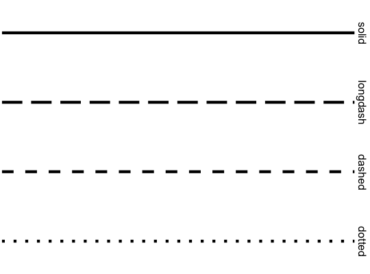

Scale for line patterns.
Default line types based on a set supplied by Richard Pearson, University of Manchester. Continuous values can not be mapped to line types.
scale_linetype(..., na.value = "blank") scale_linetype_continuous(...) scale_linetype_discrete(..., na.value = "blank")
Arguments
- ...
- common discrete scale parameters:
name,breaks,labels,na.value,limitsandguide. Seediscrete_scalefor more details - na.value
- The linetype to use for
NAvalues.
Examples
# See scale_manual for more flexibility # show common line types df_lines <- data.frame(linetype = factor(1:4, labels = c("solid", "longdash", "dashed", "dotted"))) ggplot(df_lines) + geom_hline(aes(linetype = linetype, yintercept = 0), size = 2) + scale_linetype_identity() + facet_grid(linetype ~ .) + theme_void(20)Warning message: partial match of 'y' to 'yintercept'